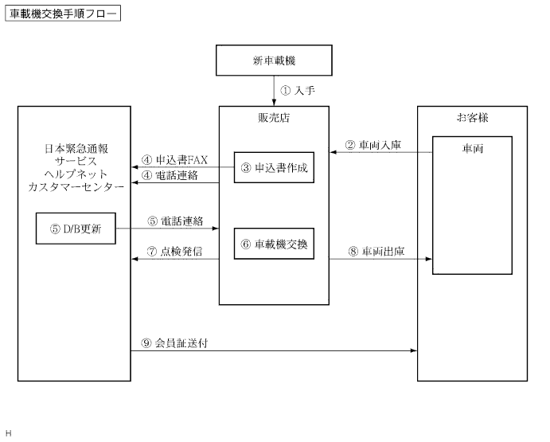

株式会社日本緊急通報サービスへの連絡
ナビゲーションコンピュータの交換作業後は株式会社日本緊急通報サービスへ連絡し、ヘルプネット車載機IDの更新を行う必要がある。
車載機ID更新手順

| 番号 | 項目 | 詳細 |
|---|---|---|
| 1 | 入手 | 販売店にて交換用(新品)の車載機を入手 |
| 2 | 車両入庫 | 車両入庫 |
| 3 | 申込書作成 | ヘルプネット入会申込書兼変更申込書に新旧車載機ID、必要事項を記入 |
| 4 | 申込書FAX | 株式会社日本緊急通報サービス宛てに、ヘルプネット入会申込書兼変更申込書をFAXで送信し、あわせて電話連絡し、確認 |
| 5 | データベース更新/電話連絡 | 株式会社日本緊急通報サービスにて、該当会員データベースのIDナンバーを変更後、販売店に電話連絡 |
| 6 | 車載機交換 | 車載機交換 |
| 7 | 点検発信(手動保守点検) | 5の変更ID入力完了の電話受領以降に、手動保守点検(サービス開始操作)を行い、会員登録が更新され会員認証が正常に処理されることを確認(要領は 参照) 参照) |
| 8 | 車両出庫 | お客様に“車載機IDを更新したため、会員証が後日送付される”旨を説明の上、納車 |
| 9 | 会員証送付 | 後日、お客様宛てに新IDナンバーを記載した会員証が株式会社日本緊急通報サービスから送付される |
ヘルプネット入会申込書兼変更申込書記入
ヘルプネット入会申込書兼変更申込書に必要事項を記入する。
図の位置に記されたシリアルNo.(ヘルプネット車載機ID)を、ヘルプネット入会申込書兼変更申込書に記入する。
- □ 参 考 □
- 交換前のヘルプネット車載機IDおよび交換後のヘルプネット車載機IDの両方を記入する。
- ヘルプネット車載機IDは“ワイドマルチAVステーション”の画面上でも確認することができる。(要領は参照)
点検発信(手動保守点検)
ヘルプネット車載機ID更新手続き終了後、手動保守点検を行う必要がある。ヘルプネットサービスの提供は、手動保守点検が正常終了した時点から開始される。(要領は
参照)機器の取り付け、ヘルプネットの契約が全て完了した時点で、動作チェックが必要である。
また、お客様に納車時に、実際に動作チェックを行い、問題なく動作することの説明が必要である。